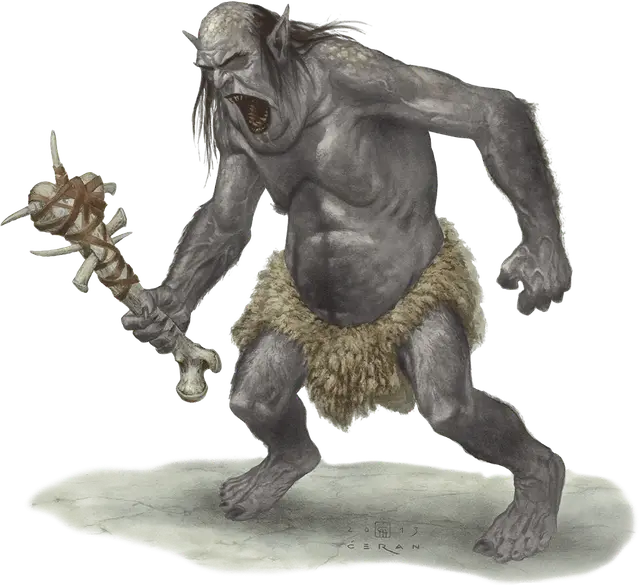

Гримлок
Grimlock
Средний Гуманоид (Гримлок), нейтрально-злой

Класс Доспеха 11
Хиты 11 (2к8 + 2)
Скорость 30 футов
| мод | спас | ||
|---|---|---|---|
| СИЛ | 16 | +3 | +3 |
| ЛОВ | 12 | +1 | +1 |
| ТЕЛ | 12 | +1 | +1 |
| мод | спас | ||
|---|---|---|---|
| ИНТ | 9 | −1 | −1 |
| МДР | 8 | −1 | −1 |
| ХАР | 6 | −2 | −2 |
Навыки Атлетика +5, Восприятие +3, Скрытность +3
Иммунитет к состояниям ослепление
Чувства слепое зрение 30 футов (или 10 когда глух, слеп за пределами этого радиуса), пассивное Восприятие 13
Языки Подземный
Опасность 1/4 (50 опыта)
Бонус мастерства +2
Среда обитания Подземье
Особенности
Компенсация слепоты. Гримлок не может использовать слепое зрение, будучи оглохшим и лишенным обоняния.
Острый слух и тонкий нюх. Гримлок совершает с преимуществом проверки Мудрости (Восприятие), полагающиеся на слух и обоняние.
Каменный камуфляж. Гримлок совершает с преимуществом проверки Ловкости (Скрытность), когда пытается спрятаться на каменистой местности.
Действия
Костяная дубина с шипами. Рукопашная атака оружием: +5 к попаданию, досягаемость 5 футов, одна цель. Попадание: Дробящий урон 5 (1к4 + 3) плюс колющий урон 2 (1к4).
Описание
Деградирующие подземные гримлоки когда-то были людьми, но поклонение свежевателям разума, наряду со столетиями бродяжничества по Подземью, давным-давно превратили их в слепых чудовищных каннибалов.
Жалкие культисты. Империя свежевателей разума когда-то простиралась на множество миров, подчиняя бессчетные расы. Среди них были и людские культуры, чьи жрецы были извращены свежевателями разума с помощью контроля мыслей. Эти лидеры отвергли веру своих последователей, обратившись к иллитидам, которых стали почитать как богохульных божеств.
Со временем, на ритуалах этих порабощенных людей выросли культы каннибалов, которые считают поедание мозга свежевателем разума священным обрядом. Иллитиды приказывали своим поклонникам похищать других разумных существ для жертвоприношений. Как только мозг жертвы поглощался, свежеватель разума отдавал безжизненное тело культистам.
Слепые охотники. С рухнувшим правлением свежевателей разума, их культы столкнулись с постоянным потоком врагов, когда-то бывших их жертвам. Культы нашли спасение в Подземье — мире их богов иллитидов. Прожив много столетий в мире без света, культисты научились выживать, используя остальные чувства. Со временем их глаза высохли, а веки закрылись навсегда.
Гримлок услышит едва уловимый топот и шепот, эхом отдающийся в каменных проходах. Он может говорить в таких низких диапазонах, что большинство гуманоидов его не услышат. Запахи пота, плоти и крови пробуждают его аппетит, и он может отследить их, словно ищейка. Чтобы усилить эти чувства, гримлоки оставляют кровавые следы, кучи навоза и внутренности добычи подальше от своего логова. Когда чужаки проходят через эти зоны, все эти отвратительные запахи оседают на них, предупреждая гримлоков о приближении.
Для большинства существ слепота это огромный недостаток. Для гримлока, у которого усилены остальные чувства, слепота это дар. Его нельзя одурачить видимыми иллюзиями или образами. И он бесстрашен, пока преследует добычу.
Бесконечная война. Гримлоки все ещё чтят свежевателей разума, служа им там, где это возможно. И они все ещё помнят войну, что загнала их глубоко под землю. Для них она никогда не закончится. Они продолжают возвращаться на поверхность, похищая пленников для своих хозяев иллитидов.